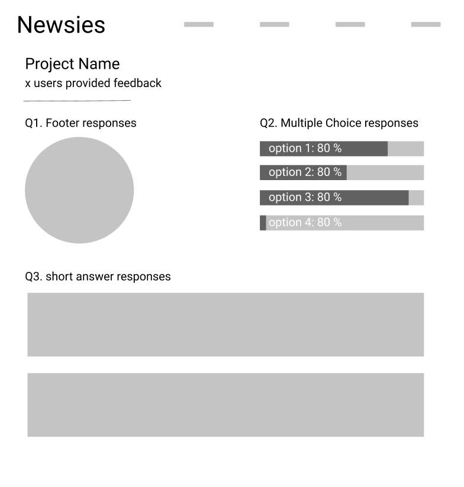

Andrea Wegner
Student at the University of Michigan
Timeline: May 2021 - Present
Skills: User interviews,Wireframing, High-Fidelity Prototyping, Graphic Design
Tools: Figma, Notion, Zoom, Google Drive
Problem
Newsletter writers do not have a quality way to receive feedback on their work.
Research and Design Process
I began researching our idea by working with the team to recruit newsletter writers for interviews about their experiences receiving feedback. I next analyzed the results and listed key features to implement for FeedBee to solve the most common issues presented in our interviews. I then created wireframes with all of the key design features. After multiple iteration processes, I turned the wireframes into high-fidelity prototypes.
Here's the first draft of our dashboard called "Newsies".
Key UX Decisions
All information in one space. Many of the writers we talked to were getting their feedback in replies to their emails which was really overwhelming and unorganized. To fix this we made a dashboard where users could see all of their feedback.
Ability to compare over time. Because writers' feedback is disorganized they cannot see if they're improving or declining over time. To solve this we added a graph that shows the proportion of their votes over time.
Download raw data. Some writers enjoy playing with their own data instead of looking at graphs made by others. We added the ability to download raw data so users could make their own graphs if they wanted to.
Prototyping
Below I have included the high-fidelity prototype I created in Figma. Due to the constraints of Figma embedding, you can only see one section of the screen at a time unless you're in full screen or click the full link.